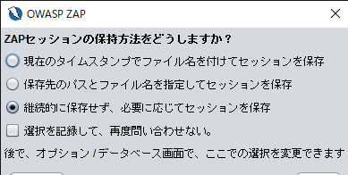

WebGoat-1: HTTP Basics再び（ついでにdocker）
iOSアプリの開発案件が入ってきたのとどうせならWSL2入れたかったので仮想化プラットフォームを有効化したら、案の定VirtualBoxで仮想マシンが起動しなくなった。
なのでこの間セットアップしたOWASP BWAを捨て、dockerでWebGoatを立ち上げることにした。dockerなんもわからん。
環境
- Windows10 2004
- docker desktop community 2.3.0.4 stable
- OWASP ZAP 2.9.0
コンテナ立ち上げ
WebGoatのdockerイメージは公式で用意されているので、ありがたく使わせていただく。
- 下記のコマンドの意味
docker run: 指定したイメージからコンテナを作成・起動。-d: コンテナをバックグラウンドで起動。ちなみにコンテナの標準入出力をターミナルに繋げるのは-itオプション。-p 127.0.0.1:10080:8080: ホストOSの10080ポートをコンテナの8080ポートにフォワード。--name: 作成するコンテナに名前を付ける。
> docker run -d -p 127.0.0.1:10080:8080 --name webgoat webgoat/webgoat-8.0
ブラウザでhttp://localhost:10080/WebGoatにアクセスしてみる。
なんかすげえモダンになっとる。適当にユーザを作成しておく。
OWASP ZAPの導入
この間はHTTP通信の解析にFiddlerを使用したが、WebGoatのページでやたらとOWASP ZAPを推してくるので下記からインストール。あとたしかJava8が必要だけど、ZAPを起動したときにJREがなければダウンロードページに飛ばしてくれる。
https://www.zaproxy.org/download/
OWASP ZAPはWebアプリの脆弱性診断ツールらしい。FiddlerのようなHTTP通信の解析はもちろん、ペネトレーションテストなども行えるとか。
ZAPを起動したらセッションの保持方法をどうするか聞いてくる。とりあえず「必要に応じて～」でいいだろう。

まずプロキシの設定を行う。ZAPはそもそもWebブラウザとWebサーバを介在するプロキシとしての機能がメインらしい。それでブラウザの代わりにサーバを攻撃したり通信を傍受したりできるのだと思う。
「ツール」タブの「オプション」を選択、「ローカル・プロキシ」で18080ポートを使用させる。
Webブラウザ（今回はFireFox）の設定も変更する。FireFoxの場合、右上のハンバーガーメニューを開いて「オプション」を選択、下部の「ネットワーク設定」の「接続設定」をクリックし、プロキシで使用するポート番号を先ほどZAPで設定したものとそろえておく。
これでFireFoxとインターネットの間をOWASP ZAPがとりもつこととなった。ZAPの画面で「Manual Explore」を選択。
URLを設定し、「Launch Browser」でFireFoxを立ち上げる。
するとセッション一覧が動き出し、通信内容を傍受している様子がわかる。
再びHTTP Basics
こないだと演習問題は変わらないように見える。入力した文字列を反転するサーバだ。
ただ前とは違って回答欄が二つある。メソッドはPOSTでいいとして、なんだ「magic number」って？
リクエストメッセージやレスポンスメッセージを見てもわからない。
仕方ないのでとりあえずPOSTメソッドだけ回答。
で、このときのPOSTを補足してみると、
書いとるし。送信するリクエストのパラメータにハードコーディングしているから「magic number」というわけか。
この数値を入力して演習終了。
一応、何回か試してみたが、このmagic numberは毎回違うものが設定されているようだ。たぶん乱数だろうが、前回とは違ってサーバ側のソースコードはWebアプリ内では公開されてないっぽい。
それにしても、今回はプロキシだのdockerだの目新しい概念に触れまくったおかげでおれのザコ脳みそがとろけそうだ。
後片付け
> docker stop webgoat # コンテナの停止
以下はコンテナを削除するが、これをやるとどこまで演習を進めたか自分で覚えなきゃいけないのでやってない。
> docker rm webgoat
再開
> docker start webgoat